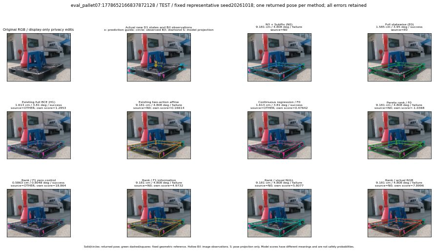

실선은 반환 자세, 초록 점선은 고정 기하 참조입니다. S는 영상 관측이 아닙니다. 점수는 모델별 의미가 다르며 보정된 안전 확률이 아닙니다. 개인정보 처리는 표시 사본에만 적용했습니다.
| 방법·seed | 위치 / 회전 / 공동성공 | 실제 출처 | 선택 후보 | 각 모델 자체 점수 |
|---|---|---|---|---|
| N0 | 9.181 cm / 4.808 deg / failure | N0 | N/A | N/A |
| E0 | 1.585 cm / 3.95 deg / success | E0 | N/A | N/A |
| E0_REGENERATED | 1.585 cm / 3.95 deg / success | E0 | E0_REGENERATED | N/A |
| POSEFIX_SUBPIX_PF_ANCHOR | 9.086 cm / 4.146 deg / failure | OTHER | N/A | N/A |
| POSEFIX_SUBPIX_YOLO_ANCHOR | 9.086 cm / 4.146 deg / failure | OTHER | N/A | N/A |
| D1_H1_MLP_s20261018 | 1.613 cm / 3.81 deg / success | OTHER | G13/ORIGINAL_WD/sample/1 | 1.2853305339813232 |
| D1_H1_MLP_s20261019 | 1.613 cm / 3.81 deg / success | OTHER | G13/ORIGINAL_WD/sample/1 | 0.9771077632904053 |
| D1_H1_MLP_s20261020 | 1.613 cm / 3.81 deg / success | OTHER | G13/ORIGINAL_WD/sample/1 | 1.4184943437576294 |
| D1_H1_PAIR_MLP_s20261018 | 1.585 cm / 3.95 deg / success | E0 | E0_REGENERATED | -0.8565752506256104 |
| D1_H1_PAIR_MLP_s20261019 | 1.585 cm / 3.95 deg / success | E0 | E0_REGENERATED | 0.12049591541290283 |
| D1_H1_PAIR_MLP_s20261020 | 1.585 cm / 3.95 deg / success | E0 | E0_REGENERATED | 0.4834018051624298 |
| D1_H1_PAIR_ROLE_AFFINE_s20261018 | 9.181 cm / 4.808 deg / failure | N0 | N0 | 0.16613566875457764 |
| D1_H1_PAIR_ROLE_AFFINE_s20261019 | 9.181 cm / 4.808 deg / failure | N0 | N0 | 0.4176451563835144 |
| D1_H1_PAIR_ROLE_AFFINE_s20261020 | 9.181 cm / 4.808 deg / failure | N0 | N0 | 0.17884059250354767 |
| R_CONT_F0_s20261018 | 1.613 cm / 3.81 deg / success | OTHER | G13/ORIGINAL_WD/sample/1 | 0.4764232337474823 |
| R_CONT_F0_s20261019 | 1.613 cm / 3.81 deg / success | OTHER | G13/ORIGINAL_WD/sample/1 | 0.4919690191745758 |
| R_CONT_F0_s20261020 | 1.613 cm / 3.81 deg / success | OTHER | G13/ORIGINAL_WD/sample/1 | 0.5615534782409668 |
| R_ORDER_F0_s20261018 | 9.181 cm / 4.808 deg / failure | N0 | N0 | -1.0368081331253052 |
| R_ORDER_F0_s20261019 | 0.5863 cm / 0.8048 deg / success | OTHER | G10/ORIGINAL_WD/selected | -0.3383590877056122 |
| R_ORDER_F0_s20261020 | 1.613 cm / 3.81 deg / success | OTHER | G13/ORIGINAL_WD/sample/1 | -1.6193742752075195 |
| R_ORDER_F1_ZERO_s20261018 | 0.5863 cm / 0.8048 deg / success | OTHER | G10/ORIGINAL_WD/selected | 18.86431121826172 |
| R_ORDER_F1_ZERO_s20261019 | 0.5863 cm / 0.8048 deg / success | OTHER | G10/ORIGINAL_WD/selected | 7.678223133087158 |
| R_ORDER_F1_ZERO_s20261020 | 0.5863 cm / 0.8048 deg / success | OTHER | G10/ORIGINAL_WD/selected | 8.738237380981445 |
| R_ORDER_F1_s20261018 | 9.181 cm / 4.808 deg / failure | N0 | N0 | 4.973227024078369 |
| R_ORDER_F1_s20261019 | 0.5863 cm / 0.8048 deg / success | OTHER | G10/ORIGINAL_WD/selected | 5.222203731536865 |
| R_ORDER_F1_s20261020 | 0.5863 cm / 0.8048 deg / success | OTHER | G10/ORIGINAL_WD/selected | 1.1130454540252686 |
| V_ORDER_NULL_s20261018 | 9.181 cm / 4.808 deg / failure | N0 | N0 | 5.807684898376465 |
| V_ORDER_NULL_s20261019 | 0.5863 cm / 0.8048 deg / success | OTHER | G10/ORIGINAL_WD/selected | 1.3025456666946411 |
| V_ORDER_NULL_s20261020 | 1.613 cm / 3.81 deg / success | OTHER | G13/ORIGINAL_WD/sample/1 | 2.712919235229492 |
| V_ORDER_RGB_s20261018 | 9.181 cm / 4.808 deg / failure | N0 | N0 | 7.899555206298828 |
| V_ORDER_RGB_s20261019 | 0.5863 cm / 0.8048 deg / success | OTHER | G10/ORIGINAL_WD/selected | 1.6787770986557007 |
| V_ORDER_RGB_s20261020 | 9.181 cm / 4.808 deg / failure | N0 | N0 | -8.601097106933594 |